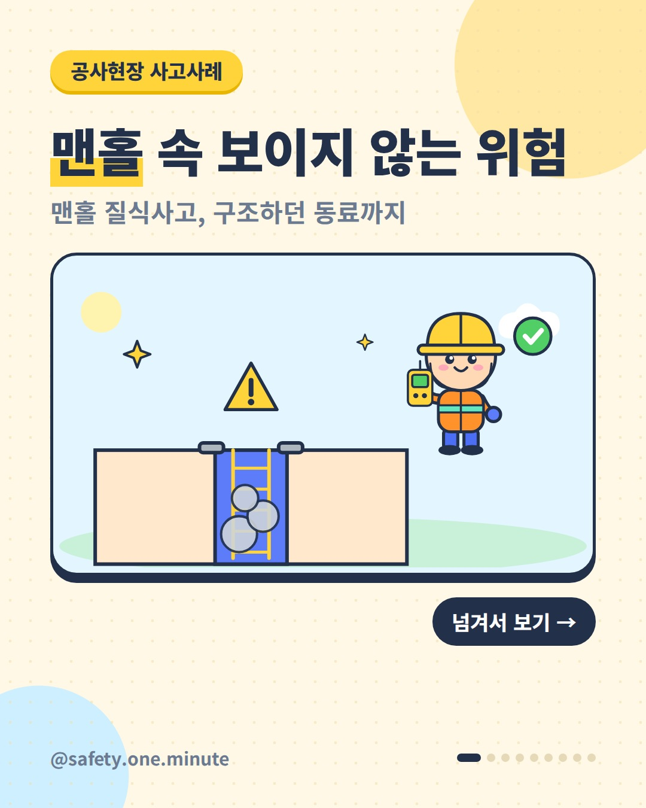
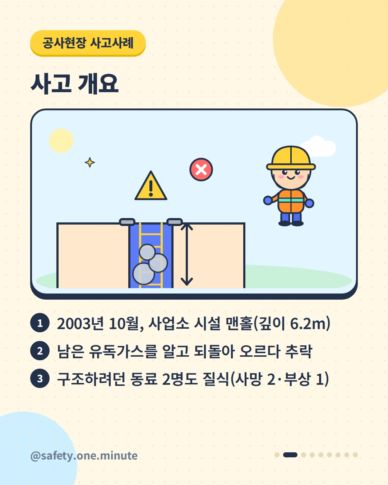
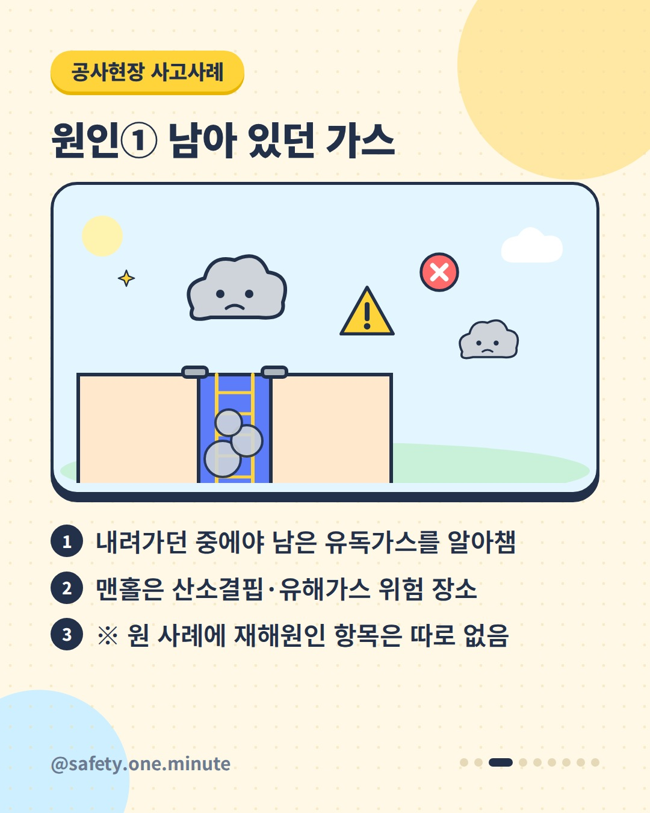
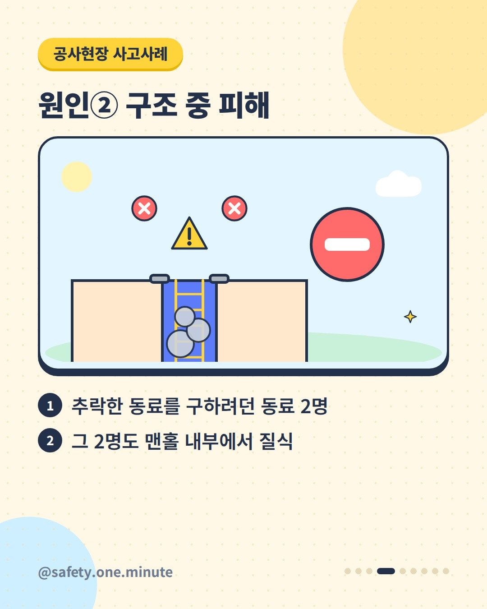
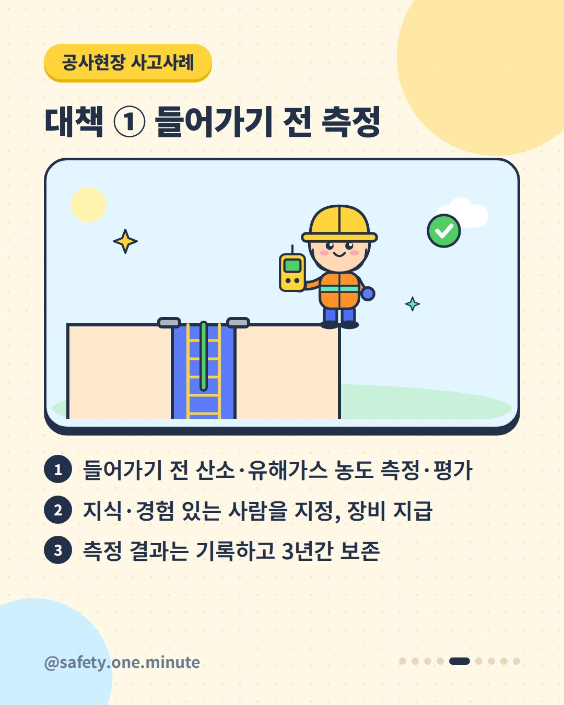
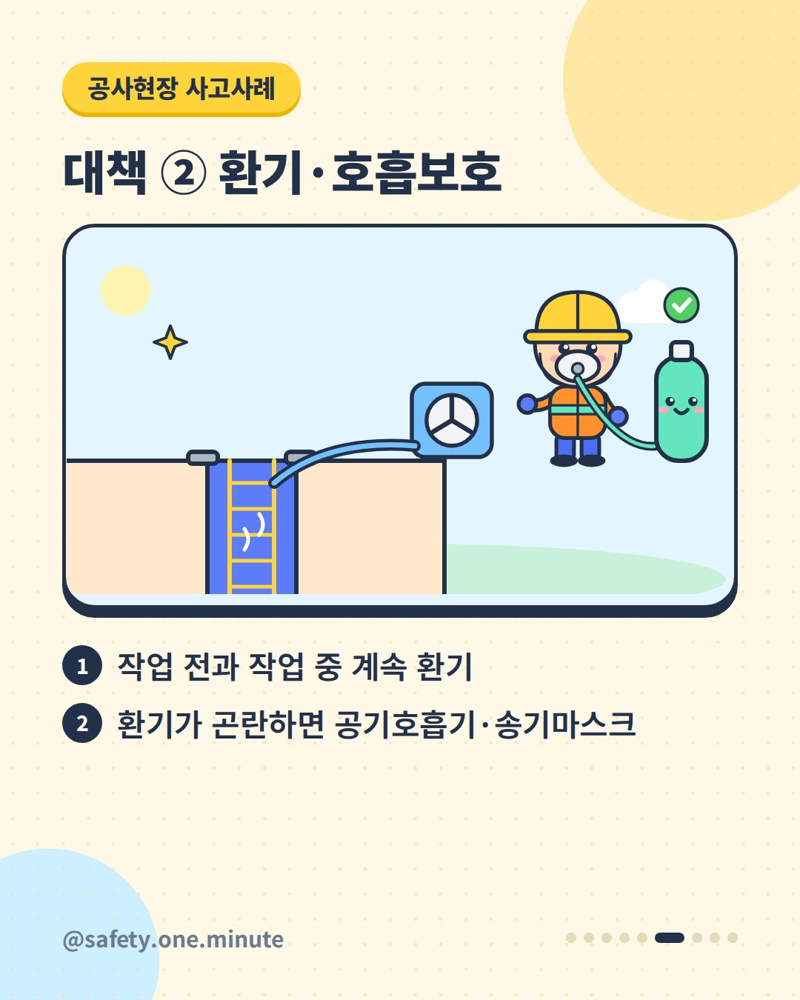
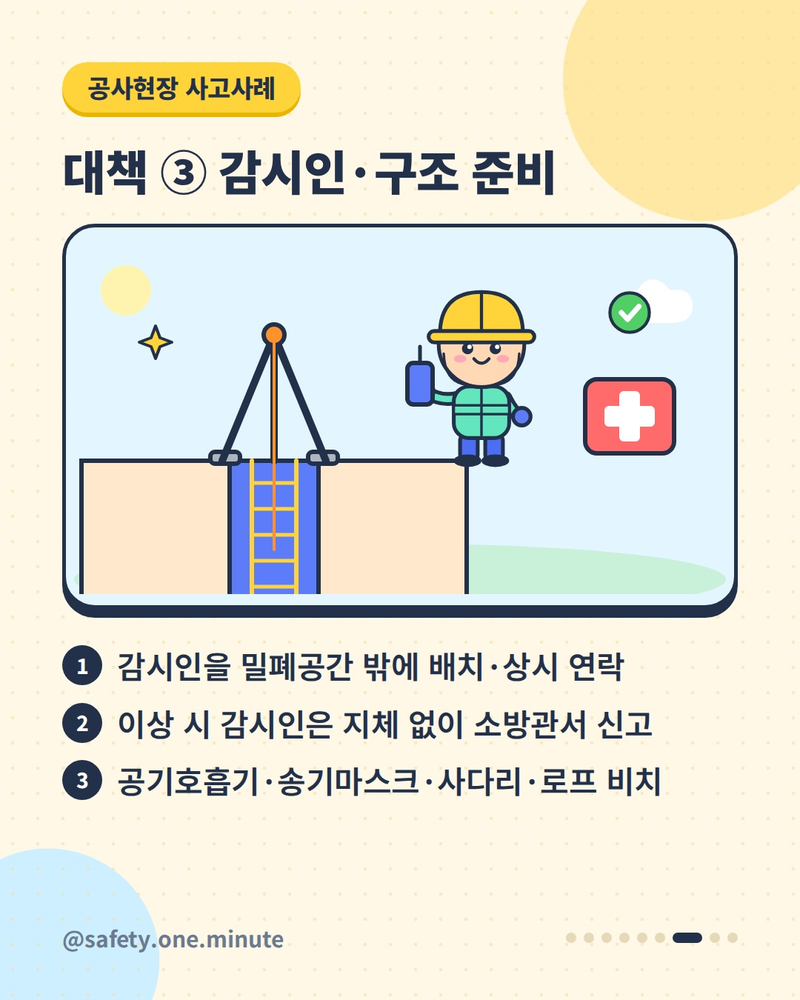
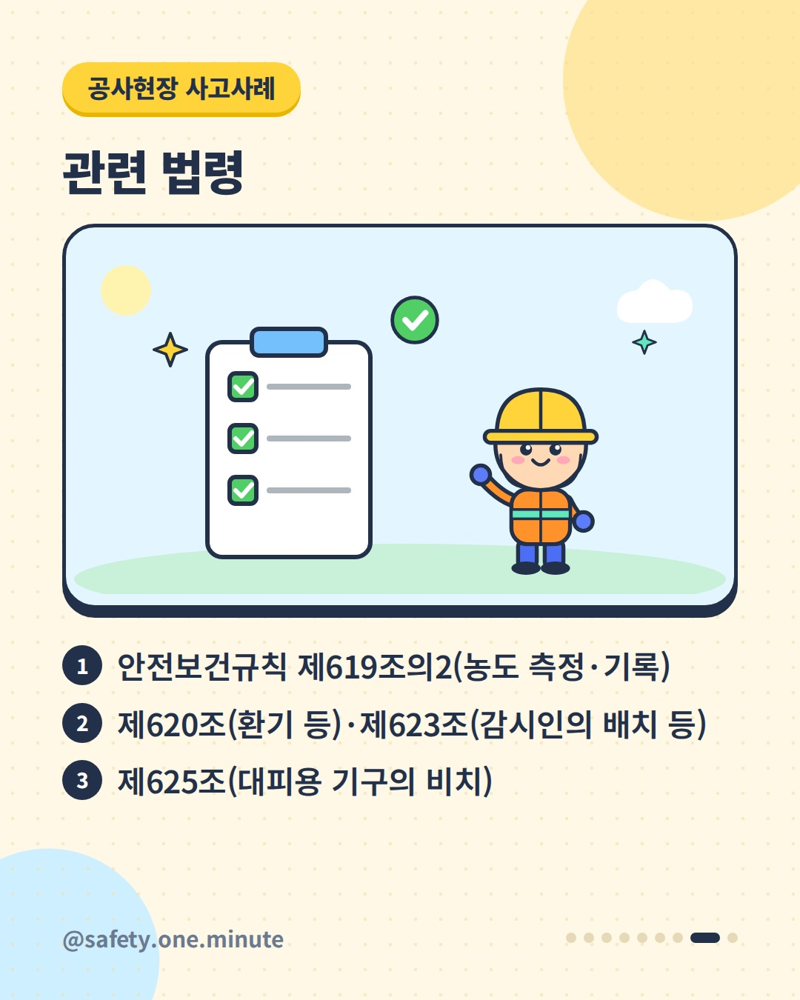

맨홀 속 보이지 않는 위험 — 9장 (4:5)








캡션
맨홀 안 공기, 눈으로는 알 수 없습니다. 고용노동부가 공개한 재해사례입니다(2003년). 한 사업소 시설의 깊이 6.2m 맨홀에서 쌓인 슬러지와 토사를 확인하러 수직사다리로 내려가던 작업자가, 남아 있던 유독가스를 알아채고 올라오다 바닥으로 추락했습니다. 이 작업자를 구조하려던 동료 2명도 맨홀 안에서 질식했고, 2명이 숨지고 1명이 다쳤습니다. 고용노동부에 따르면 최근 10년(2014~2023년) 밀폐공간 질식재해로 338명이 재해를 입었고 그중 136명이 사망했습니다. 재해자 2명 중 1명꼴로 사망하는 사고입니다. 현행 산업안전보건기준에 관한 규칙은 이렇게 정하고 있습니다. ① 작업 전 산소·유해가스 농도를 측정·평가하고 결과를 기록해 3년간 보존(제619조의2) ② 작업 전과 작업 중 환기, 환기가 곤란하면 공기호흡기·송기마스크 착용(제620조) ③ 감시인을 밖에 배치하고 이상 시 지체 없이 소방관서에 신고(제623조) ④ 공기호흡기·송기마스크·사다리·섬유로프 등 구출 기구 비치(제625조) ※ 사고 당시와 현재 법령은 다릅니다. 세부 요건은 법령 원문(2025.9.1. 시행본 및 2025.12.1. 개정 내용)을 확인하세요. 출처: - 고용노동부 – 맨홀 내부 질식사고 재해사례(2003) - 고용노동부 – 밀폐공간 질식사고 예방 보도자료(2024) - 국가법령정보센터(법제처) – 산업안전보건기준에 관한 규칙 개인이 운영하는 안전정보 공유 계정이며 소속 기관의 공식 입장과 무관합니다. 법령 해석의 최종 근거는 국가법령정보센터 원문입니다. #밀폐공간 #질식사고 #맨홀 #질식재해예방 #산소농도측정 #환기 #송기마스크 #감시인 #재해사례 #사고사례 #산업안전 #산업안전보건기준에관한규칙 #현장안전 #안전보건